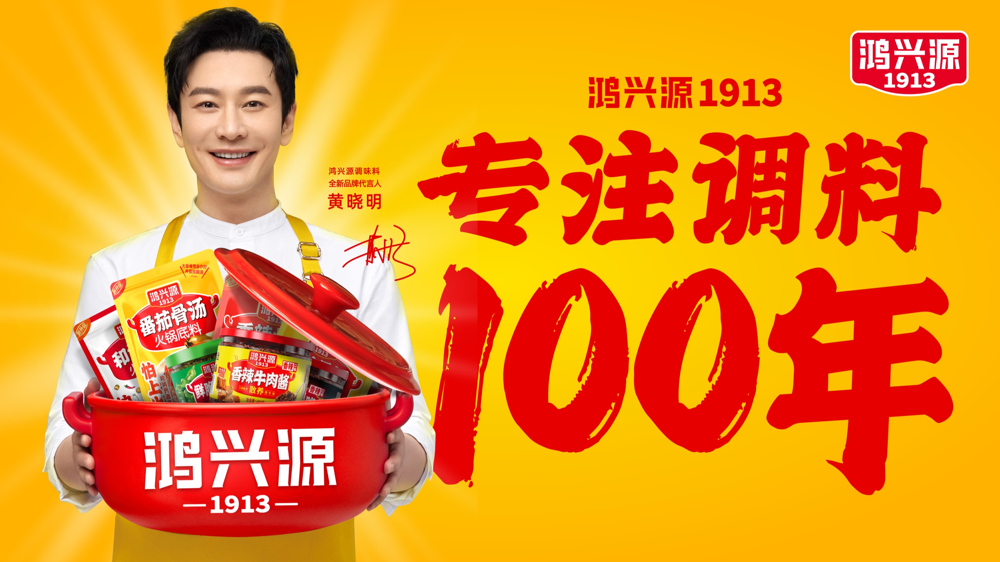
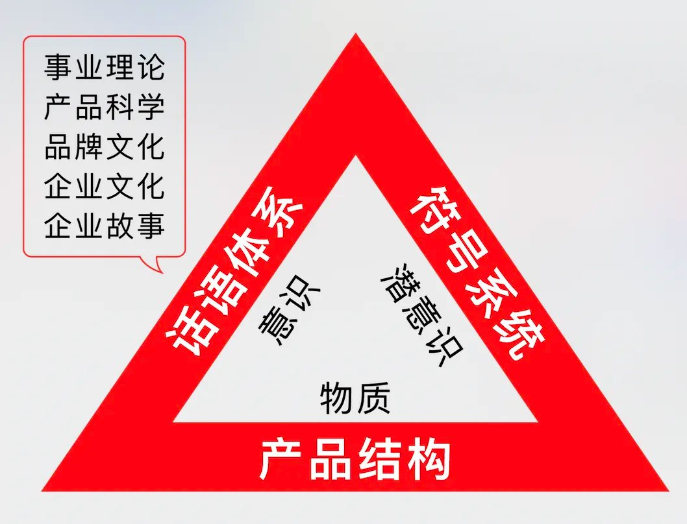
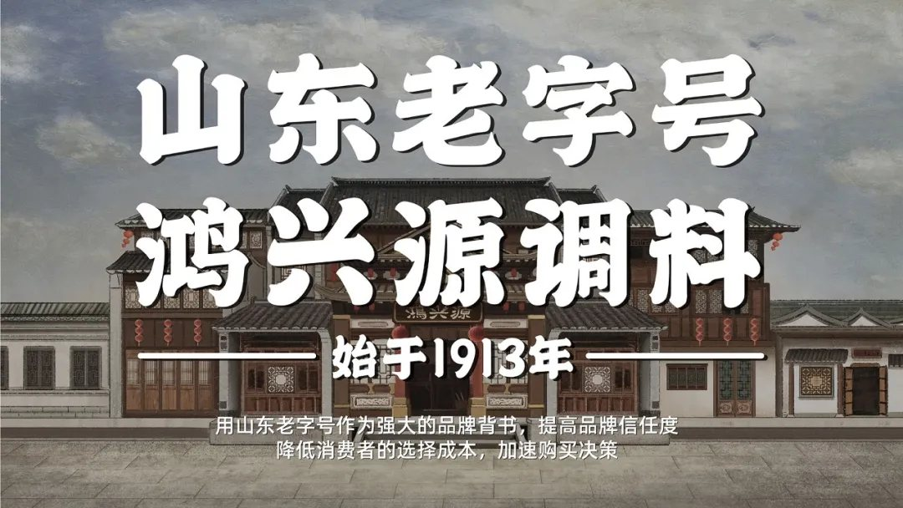

01 · 战略
先明确老字号今天代表什么
历史本身不会自动转化为购买。项目把地域信誉、调味品专业和品牌名称组织成清晰表达，让消费者迅速理解鸿兴源的身份与产品。

02 · 语言
用固定话语集中品牌信誉
“山东老字号，鸿兴源调料”把地域、资历和品类放在同一句话中，便于包装、终端和销售反复使用。

03 · 包装
用系列化识别统领不同调味品
不同产品保留口味和用途信息，同时统一品牌名称、视觉资产和版面秩序，让多个SKU在货架上形成品牌整体。
04 · 延伸
让核心识别适应更多品类与场景
可重复的符号与版式为新品和渠道物料提供共同基础，品牌扩展不必每次重新建立认知。